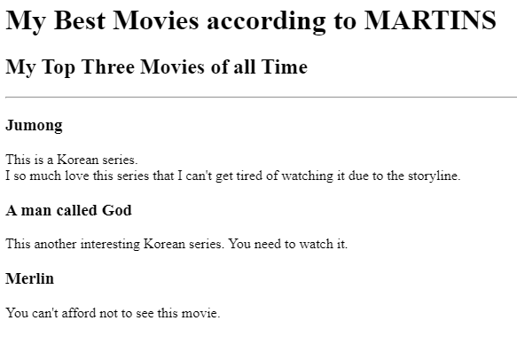

Welcome to my Profit Portfolio
Hello
Welcome to my Portfolio. My name is Okonkwo Nnaemeka Martins
I am a web developer in the making. Currently, I am learning HTML.
Below are some of my projects
- My Webpage Project
- Birthday Invite Project
- Movie Ranking Project

About me
Contact me